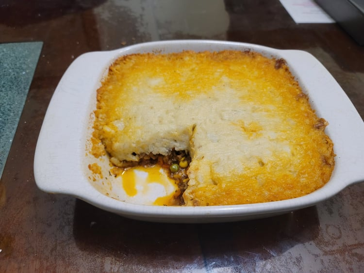

Shepherd’s Pie

Ingredients:
Meat Filling:
- 1 lb Ground lamb
- 1 Onion, diced
- 2 tbsp Olive oil
- 2 tsp Dried parsley
- 1 tsp Dried rosemary
- 1 tsp Dried thyme
- 2 cloves Garlic, minced
- 1 tbsp Worcestershire sauce
- 2 tbsp Tomato paste
- 2 tbsp Flour
- 1 cup Beef broth
- 1 1/2 Frozen mixed vegetables: Corn, Carrots, Peas
Mashed Potatoes Topping:
- 1 1/2 - 2 Russet potatoes, peeled and cubed
- 8 tbsp Unsalted butter
- 1/3 cup Half and half
- 1/2 tsp Garlic powder
- 1/2 tsp Salt
- 1/4 tsp Black pepper
- 1/4 cup Parmesan
Instructions:
- Heat the olive oil in a large pan over medium heat. Then add in the onions. Sauté until soft, about 5 minutes.
- Add in the ground meat. Break down the meat with a wooden spoon and add in the dried herbs, salt, and pepper. Mix and cook until completely browned, about 6-8 minutes, stirring occasionally.
- Add the Worcestershire sauce and garlic. Stir to combine and cook for 1 minute.
- Add the flour and tomato paste. Stir thoroughly until no clumps of tomato paste remain.
- Add the broth and frozen vegetables. Then bring the liquid to a boil and then reduce to simmer. Simmer for 5 minutes, stirring occasionally. Then remove from heat.
- Preheat the oven to 400 degrees Fahrenheit.
- Add the potatoes to a pot with water to cover. Heat to a boil and then reduce to a simmer. Cook until fork tender, 15-25 minutes.
- Strain the water out and then return the potatoes to the pot. Let rest for 1 minutes for any remaining water to evaporate. Add in the butter, half and half, garlic powder, salt, and pepper. Mash until a smooth consistency.
- Add in the parmesan and mix until thoroughly incorporated.
- place the meat mixture into a 9x9 inch baking dish in an even layer. Spoon the mashed potatoes on top of the meat and carefully spread into an even layer.
- Place into the oven and bake for 25-30 minutes, or until the meat is bubbling and the potatoes have browned. Then remove from oven and let cool for 15 minutes before serving.